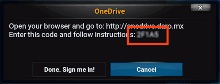

Introduce el código que te muestra tu pantalla de KODI:

Tu código:
Tu código es invalido. Inicia el addon de OneDrive en tu KODI y selecciona "Add an account..." para ver tu código.
Ocurrió un error. Probablemente el servicio no esta disponible o esta en mantenimiento. Por favor intenta de nuevo en unos minutos.
Código aceptado. Ultimo paso:
Necesitas iniciar sesión en tu cuenta de OneDrive y darle permiso a la aplicación "OneDrive for KODI".
Hay un boton aqui abajo para iniciar este proceso!
ESTO ES IMPORTANTE:
Una página totalmente en blanco aparecerá al final de este paso (despues de que dices "Si/Yes").
Necesitas copiar la dirección (URL) de esa página en blanco y pegarla en el cuadro de abajo donde se te indica.
No lo teclees manualmente! Usa Copy/Paste (Normalmente Ctrl+C / Ctrl+V)
Pega aquí la URL de la página en blanco y da clic en Terminar:
Esta URL es inválida. Asegúrate de copiarla de la página en blanco. Intenta Iniciar Sesión de nuevo.Al parecer tu código ya no es válido. Intenta Iniciar Sesión de nuevo.Ocurrió un error. Probablemente el servicio no esta disponible temporalmente o esta en mantenimiento. Por favor intenta de nuevo en unos minutos.
La autenticación esta completa!
Ya puedes seleccionar "Done. Sign me in!" en el diálogo que te aparece en tu pantalla de KODI.
 English
English